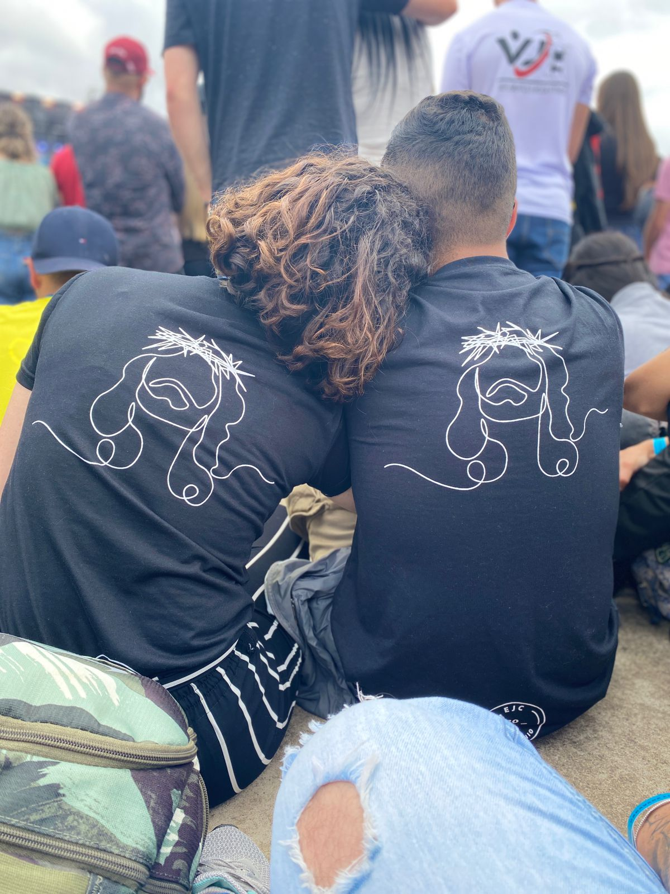

Bem vinda ao nosso ano
Os primeiros passos de uma vida inteira
- 31557600 Segundos
- 525600 Minutos
- 8766 Horas
- 365 Dias
- 12 Meses
- 1 Ano
Um ano inteiro passou aqui, e muitos sentimentos novos
Relembre estes sentimentos, só alguns, de tantos outros...
-
Uma luz extremamente explosiva e extraordinaria aparaceu para mim naquele EJC
-
Que desde o primeiro Date tirou os sorrisos mais verdadeiros da minha vida
-
Havia um amor tomando rapidamente uma proporção inimaginavel
-
Rapidamente nosso lugar era ali, um do lado do outro um pelo outro
-
O conforto, e a alegria de cada momento era algo surreal
-

De cineminha em cineminha, nosso amor ia crescendo, e crescendo
-
Criando intimidade, criando laçoes e criando uma vida juntos
-
Conquistando cada coisinha para o nosso futuro juntos
-
Colorindo cada dia cinza, substituindo tudo por sorrisos
-

Se apegando a Deus juntos, caminhando por ele
-
Vivendo grandos sonhos e grandes momentos
-
Completando ciclos e iniando outros, juntos!
Porque sou grato, por cada segundo
Sou grato por cada segundo destes 365 dias que vivi neste lugar, sou ainda mais grato por ter cruzado um caminho tão improvavel, mas que era exatamente o caminha que eu precisava, e por ter tido essa sorte.
A mulher que resolveu me amar, é simplesmente a mulher mais extraordinaria que ja conheci, e suas trilhoes de qualidades te fazem ser assim, o cuidado, e o amor, a vontade de ser, a vontade de estar , e de permanecer, me torna o cara mais sortudo do mundo